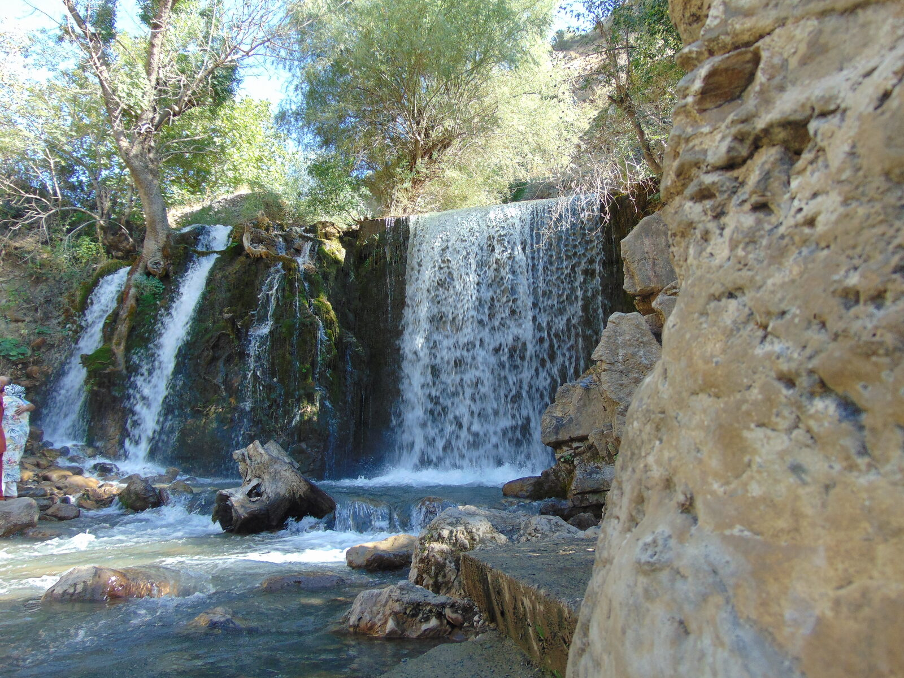
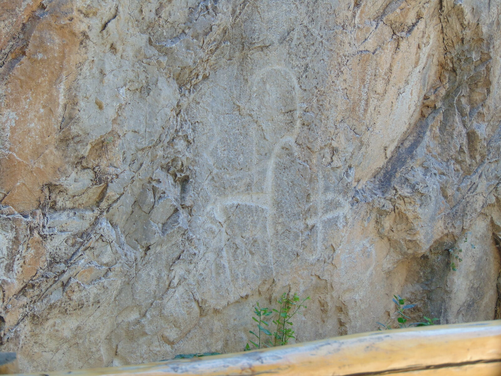
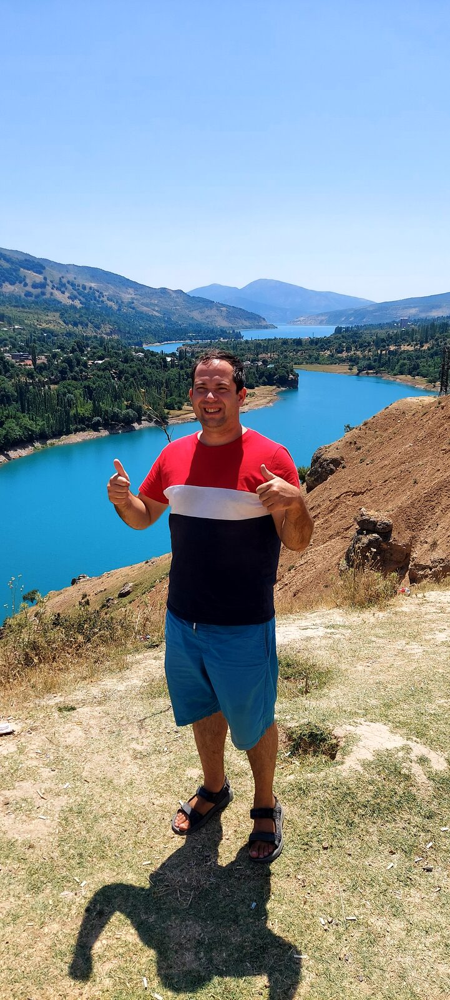
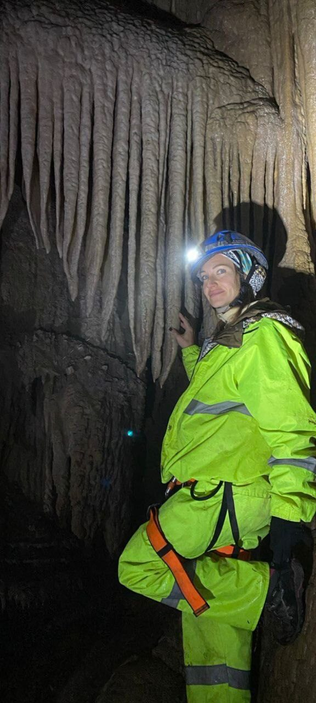
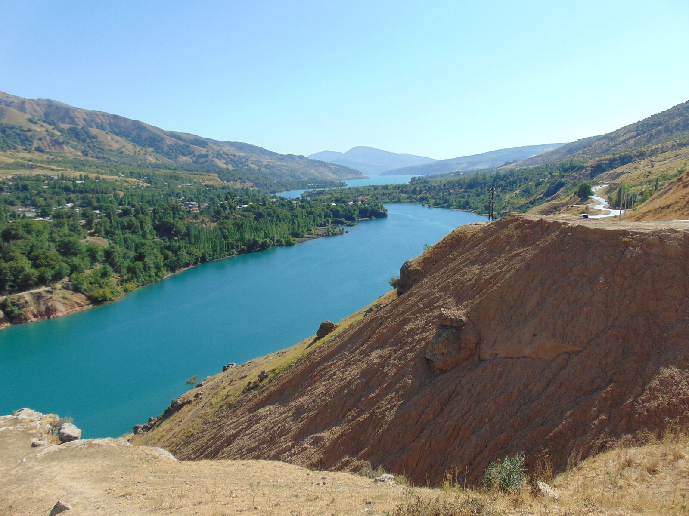
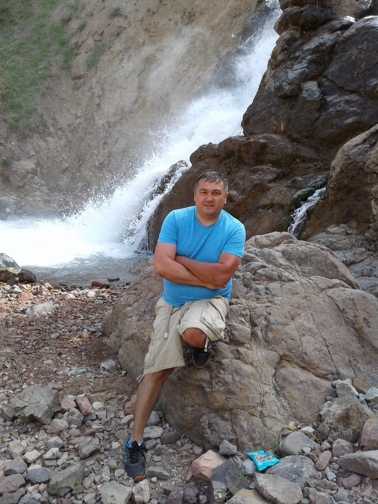

Touch 8,000-year-old rock carvings, ride a cable car over the valleys, and end the day at a waterfall.
A full-day journey into the Bostanlyk district, the wild and beautiful corner of the Tashkent region where the Tian Shan mountains begin. This tour connects ancient history, dramatic nature, and genuine Uzbek culture in a way that no city tour can match.



A museum built by a local enthusiast out of love for the region. A herbalist shows you mountain plants used in folk medicine and lets you taste herbal teas.
An ascent with panoramic views over the Bostanlyk valley and mountain ridges — one of the best bird's-eye views in the Tashkent region.
A traditional teahouse on the edge of the Charvak Reservoir. Lunch in a yurt or open pavilion with views over the water. (Lunch is paid separately.)
Rock carvings over 8,000 years old depicting hunting scenes, rituals and daily life — among plane trees that have stood here for up to 850 years.
One of the best viewpoints over one of the largest artificial lakes in Uzbekistan. Outstanding for photography.
A natural grotto tied to local Ali Baba legends, beside a Zoroastrian burial ground that predates Islam in the region.
A glacial torrent of turquoise and white — a classic mountain landscape and a moment of calm.
The stop guests remember most: a waterfall in a lush gorge, reached by a short walk or a ride in a Soviet-era UAZ jeep. Swim in summer.



Hotel pickup. Exact details confirmed after prepayment.
From $66 / €58 per person. Tell us your date and group size and we will confirm within 24 hours.
Book This Tour